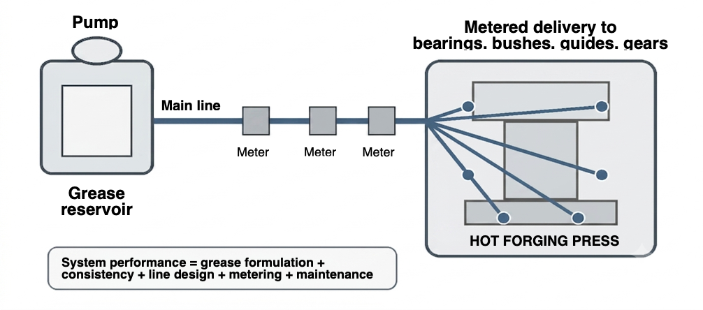
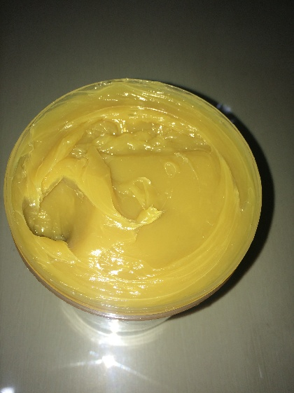
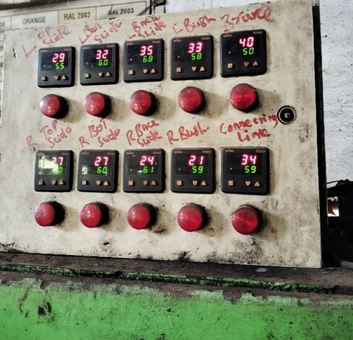
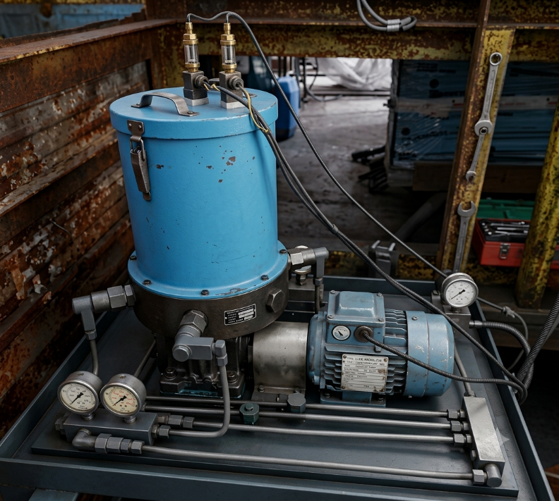

1. Introduction
Hot forging presses operate under extreme conditions: very high loads, shock, vibration, elevated ambient temperatures, scale ingress, and continuous cyclic motion. Under these conditions, centralized lubrication systems are not a convenience but a critical life-support system for the press.
Among all consumables used in forging presses, grease selection and management has one of the highest leverage effects on:
- Gearbox and bearing temperature
- Wear rate of slides, guides, bushings, and eccentric mechanisms
- Reliability and life of lubrication pumps, plungers, distributors
- Smoothness of press operation and stroke repeatability
- Unplanned breakdowns and maintenance costs
From decades of plant experience, a very high percentage of forging press failures can be traced back to incorrect grease selection, incorrect grease consistency, or poor lubrication practices rather than design defects.
This article explains why EP lithium grease is the backbone of forging press lubrication, how to select the correct NLGI grade (EP0 / EP00 / EP000), and how to design, audit, and maintain a centralized lubrication system for maximum press life.
2. Why Lubrication Is Critical in Hot Forging Presses
2.1 Nature of Loads in Forging Presses
Forging presses experience:
- Extremely high contact pressures (boundary lubrication regime)
- Shock loading at every stroke
- Micro-sliding under load in bearings and guides
- High operating temperatures due to proximity to hot billets
Under these conditions, ordinary greases fail quickly due to:
- Oil separation
- Soap breakdown
- Loss of film strength
- Inability to flow through centralized systems
2.2 Role of Centralized Lubrication
A centralized lubrication system ensures:
- Correct quantity of grease
- At correct intervals
- To multiple lubrication points simultaneously
However, the system can only perform as well as the grease allows. Wrong grease consistency or formulation converts the system into a liability.

System performance = grease formulation + consistency + line design + metering + maintenance
3. Why EP Lithium Grease Is Preferred for Forging Presses
3.1 Lithium Soap Thickener — Structural Advantages
Lithium soap greases offer:
- High mechanical stability (resist shear breakdown)
- Good water resistance
- Wide operating temperature range
- Excellent pumpability
These properties are essential for centralized systems with long lines and metering valves.
3.2 EP (Extreme Pressure) Additives — The Real Protector
EP additives form sacrificial chemical films under high load and temperature. These films:
- Prevent metal-to-metal contact
- Reduce scuffing and adhesive wear
- Protect during shock loading
In forging presses, lubrication is frequently in boundary regime, where EP additives are not optional—they are essential.

4. Understanding NLGI Grades in Centralized Lubrication
4.1 Why Consistency Matters More Than Brand
In centralized lubrication, the NLGI grade determines whether grease:
- Reaches all lubrication points
- Causes pump overload
- Separates oil prematurely
4.2 EP0, EP00, EP000 — Where Each Is Used
EP0 Lithium Grease
Semi-fluid grease. Used in: short-line centralized systems, heavy bearings. Advantages: better staying power, higher load carrying. Risk if misused: poor pumpability in long lines.
EP00 Lithium Grease
Semi-fluid (most commonly used grade). Ideal balance of flow and film strength. Used in: most forging press centralized systems. Advantages: excellent pumpability, good EP protection.
EP000 Lithium Grease
Very fluid grease. Used in: long pipelines, cold environments, fine metering valves. Advantages: excellent flow, minimal pump stress. Risk if misused: leakage, inadequate film under extreme load.
5. Studying the Centralized Lubrication System Before Grease Selection
5.1 Mapping the System
Before choosing grease, study:
- Length of main and branch pipelines
- Diameter of pipes
- Number of lubrication points
- Type of metering valves
- Pump type (manual, pneumatic, electric)
5.2 Critical Questions to Ask
- Is grease reaching the farthest lubrication point?
- Are metering valves clogging?
- Is pump plunger overheating or failing prematurely?
- Is grease bleeding excessively at bearings?
These symptoms guide correct NLGI selection.
Industrial Case Studies
Case Study 1 — Press Breakdown Due to Incorrect Grease Selection
Background
- 1600-ton hot forging press.
- Centralized lubrication with long pipeline runs.
- Grease used: NLGI EP2 lithium grease (incorrect)
- Problem: Sudden, violent seizure of the main eccentric gear bearing.
- Down-time: 3 weeks.
Investigation: The maintenance team had switched to a generic, non-EP NLGI 2 lithium grease to reduce costs. The Centralized Lubrication System was struggling to pump it in winter.
Tribological Autopsy
- Pump Plunger Wear: The stiff grease caused excessive wear on the plunger, reducing output pressure.
- Starvation: Bearing #6 (farthest from pump) received insufficient grease.
- Film Collapse: Without EP additives, the oil film under the extreme load of the eccentric shaft collapsed.
- Adhesive Wear: Metal-to-metal contact led to adhesive wear, micro-welding, and eventual seizure.
Result
Root Cause
- Incorrect grease selection ignoring EP requirements and low-temperature pumpability.
- EP2 grease too stiff for centralized system.
- Pump starvation and grease channeling.
Corrective Action
Switched to SPS EP00 lithium grease — customized for hot forging presses. Cleaned and flushed lubrication lines.
Case Study 2 — Smooth Press Operation with Correct EP Lithium Grease
Background
- 1600-ton hot forging press.
- Automated centralized lubrication.
Grease Strategy
- SPS EP00 lithium grease used for main system
- SPS EP0 lithium grease used for gearbox bearings
Results


Key Learning
Correct grease consistency improves entire system efficiency, not just lubrication.
Grease-Related Symptoms and Diagnostic Table
| Symptom | Likely Cause | Corrective Action |
|---|---|---|
| Pump overheating | Grease too stiff | Shift to SPS EP00 / EP000 |
| Dry lubrication points | Poor pumpability | Reduce NLGI grade |
| Excessive leakage | Grease too fluid | Increase to EP00 |
| High bearing temperature | No EP additives | Use SPS EP lithium grease |
Best Practices for Grease Management in Forging Presses
- Never mix different grease types
- Flush system during grade change
- Store grease in clean, sealed containers
- Monitor grease consumption trends
- Periodically inspect metering valves
Call to Action: This week, audit one press. Check the grease drum. Is it an EP grade? What is its NLGI number? Measure two critical bearing temperatures.
For a thorough and objective evaluation of your forging press centralized lubrication system, engage trained technicians and tribologists from team SPS. The first step towards optimization is awareness.
Conclusion
In hot forging presses, grease is not a consumable—it is a design element. Correct selection and management of EP lithium grease, especially choosing the right NLGI grade (EP0, EP00, EP000), directly governs press reliability, operating temperature, wear life, and productivity.
Most press breakdowns attributed to "mechanical failure" are actually tribological failures rooted in incorrect lubrication decisions. When the centralized lubrication system and grease are treated as a unified engineering system, forging presses operate smoothly for decades with minimal intervention.
This article is intended as a practical guide for forging press maintenance engineers and plant managers. It is based on actual case studies in forge shops where the author and the team at SPS are involved in solving problems of centralized lubrication of forging presses. Preventing rejections due to scaling, achieving optimum die life through lubrication and increasing die life through special treatment techniques are other areas where team SPS assists forging organizations.
Forgings Today Subscribers can avail the complementary services of trained engineers and lubrication experts from team SPS in objectively evaluating and reporting centralized lubrication system of forging presses.